The company portal https://j-aautomation.com/j-aautomation/app is LIVE. A link to it never enters a simulation. For practice obtain a separately provisioned training URL, your own account, the permitted fictional project and dates, a visible environment identifier and the trainer’s reset procedure. Without those, use this guide as a read-only demonstration and enter only authorized genuine work.
Original BBS examples include historical live-deployment records. Later training exercises used isolated copies. Each chapter identifies its dataset and checkpoint. Follow the dates and saved states shown for that exercise.
A role, project membership, review permission, supplier authorization and dated crew delegation are separate. Use your own credentials and follow the tasks assigned to your role. Check the selected project and person before recording work.
Verify the result
Confirm your displayed identity, the environment, project number and work dates before saving. For training/reset or lost access contact admin@j-aautomation.com; send the route, role, project/record reference, time and visible error. Keep passwords, activation links, recovery codes and cookies private.
If you get stuck
For an empty project selector, ask the Owner to check account status and assignment/authorization coverage. Do not create a duplicate project or borrow another account.
J&A Automation · BBS role manual · 7 October 2026
Access · activate the invitation and sign in
Go here: Your trusted invitation → Activate your account → Return to sign in → Profile
Do the task
Check the portal address and named account against the invitation provided by the Owner. There is no public sign-up. For an already provisioned account, use the sign-in method supplied to you; do not attempt to activate someone else’s invitation.
For a single-use activation link, open Activate your account. Enter Full name and choose a Password of at least 12 characters, then Activate account. Wait for Account activated. You can sign in now. Do not repeatedly submit while Activating… is displayed.
Choose Return to sign in. Enter your account Email and Password and select Continue to workspace. If you previously enabled MFA, complete Verify your identity with the current Six-digit code and Verify and continue. Use a recovery code only through the offered Use a recovery code control.
Open Profile and verify the own-account name/email/role in Account security. Check the navigation and assigned project. A newly activated account can have zero assignments; activation alone does not grant project access or supplier/chief authority.
Verify the result
The activation success message precedes the separate sign-in. Verify your own Profile and assigned projects after signing in.
If you get stuck
An expired or already used link displays This invitation could not be activated. It may have expired or already been used. If activation already succeeded, return to sign in. Otherwise request a new invitation from the Owner; reloading does not renew the old link.
For offline, temporarily unavailable or rate-limited activation, retain the entered name/password privately, restore connectivity or wait for the displayed retry interval, then retry. An unconfirmed response is not proof of an active account.
For an incorrect password, inactive account or lost access, contact admin@j-aautomation.com from your verified account/contact channel. Supply identity and the visible error; never send the password. This guide does not promise a public password-reset form. The initial Owner is provisioned by the platform operator; an existing Owner provisions the remaining team.
J&A Automation · BBS role manual · 7 October 2026
Access · activate the invitation and sign in
Isolated new recipient: the native activation success message. The password remains masked; this is separate from sign-in.
J&A Automation · BBS role manual · 7 October 2026
Access · activate the invitation and sign in
Reusing the same single-use training invitation shows the genuine recovery message. Return to sign in if already activated; otherwise request a new invitation.
J&A Automation · BBS role manual · 7 October 2026
Practice setup · your account and starting records
Obtain your own training account, isolated environment, authorized project and lesson dates from the trainer. Confirm the named starting records and expected result before saving. Ask the trainer to restore the checkpoint when needed.
Checkpoint
Required starting condition
Identity and environment
Own correctly provisioned role/profile; isolated URL and visible environment identity.
Project and dates
Exact project number, timezone and unused eligible lesson dates; membership and relevant grants cover both current access and the work date.
Source state
Named source IDs and durations/amounts; ordinary starting drafts/submissions; no unrelated correction already open.
Expected outcome
Expected saved state, source count, actual total and permitted output; named receiving reviewer where needed.
Verify the result
Confirm that the visible starting records match this lesson. If they differ or an action is unavailable, stop and ask the trainer for the correct checkpoint.
J&A Automation · BBS role manual · 7 October 2026
Review authority · who receives each source
Review is determined by the source, base role and current dated grants. Chief delegation grants recording, not approval. A Worker with Can review checked does not become a Project Manager. Send a factual reason with every requested correction.
Source / recorder
Operational reviewer and prerequisite
Next handoff
Internal own or chief-delegated time
Owner or Finance; assigned PM with current active Can review membership for this project.
Submit the checked work to the authorized reviewer and verify the resulting state.
External/supplier time, including coordinator own time
Authorized Owner. Supplier authorization/recorder provenance keeps these sources outside the ordinary PM time queue.
Verify the resulting review state.
Own/delegated expenses
Owner or Finance; assigned PM with current project review grant. Check factual purchase, payer and evidence.
Verify the expense review state. Direct reimbursement questions to the Owner.
Daily and Technical reports, including supplier profiles
Owner or Finance; assigned PM with current project review grant and permitted project scope.
Owner/Finance prepares the customer period report and version-bound acceptance where required.
PM’s own work
Route it to another authorized reviewer for an independent factual check. Do not infer a universal self-review prohibition solely from a job title.
Use the appropriate personal output and verify the review state.
If you get stuck
If the intended source is absent, check source type, state, dates, assignment/review grant and supplier authorization before searching another queue. A review-enabled Worker Chief variant is not exposed by the current role model; Owner must provision the genuinely permitted reviewer role and grant. Never use a colleague’s credentials to bypass this boundary.
J&A Automation · BBS role manual · 7 October 2026
Start with your own account
Isolated BBS role lab · genuine Worker account · fictional October 2026 records
Go here: Sign in → Today
Use the individual active Worker account provisioned by your Owner. Person, account, project assignment and approval permission are separate. An invitation or password does not itself assign a project. The first-shift and normal correction exercise uses BBS DEMO - Tecnico 2 in C-0050-P-2026100601 · BBS READINESS · normal work cycle, with synthetic October 7–12, 2026 records in the isolated lab. Earlier C-0050-P-20261005 records are historical examples.
Before practising, obtain an operator-provided training URL, your own training account, a visible deployment identifier, permitted scope and reset instructions. This guide does not supply a shared training login. Live company portal links open the live company service; they never enter the isolated demonstration. Do not enter simulated work, expenses or payments in the live portal.
Today is your landing page. Time records actual work; Expenses records purchases and evidence; Reports records daily and technical facts; My Pay shows your own compensation and reimbursements; Profile manages your workforce profile and security. Notifications and Help are in the navigation. Crew hours is useful only when the Owner has granted applicable delegation.
For account access and recovery, use the common Access (access), Security (security), Review authority (review-authority) and Practice setup (trainer-setup) sections. Those controls are shared across roles; a job title does not grant access.
Do the task
Sign in with your own account. Confirm the account, language and environment before entering data.
On Today inspect assigned projects and published plans. Open the BBS project or use Log actual time, Write field report or Add expense.
On a phone use More for additional destinations; close the navigation drawer before entering a form.
Verify the result
The active project and person agree with your intended work. No other person’s credentials are needed.
J&A Automation · BBS role manual · 7 October 2026
Start with your own account · continued
If you get stuck
Ask the Owner to activate the account or correct project assignment if your project is missing. Do not create duplicate people or share accounts.
J&A Automation · BBS role manual · 7 October 2026
Start with your own account
Worker Today: native own-account navigation and assigned BBS project.
J&A Automation · BBS role manual · 7 October 2026
Save and inspect actual time
Isolated readiness lab · own Worker 2 account · unlocked new project · synthetic October 7, 2026
Go here: Time → Log time
Record the work you actually performed. The isolated first shift saved two hours on October 7 for Worker 2 in the new training project, then submitted it separately for review. The Owner returned that source; the normal linked correction below changes it to 1.5 hours while preserving its history. Decimal hours are duration: 3.5 means three hours thirty minutes.
Category describes operational activity. Selecting Overtime does not by itself promise a premium; approved compensation rules determine money. Add start/end times is optional; do not invent clock times from duration. Add meal expense with these hours is a separate expense input.
Do the task
Open Log time. Select Project and Date; choose the operational category and enter Actual hours and Activity summary. Fill offered site/detail fields with facts.
Use Save draft. Open the saved row and check person, date, project, category and actual duration before submitting.
Use individual Submit on the time detail. Confirm Submitted; saving a draft alone does not send it for review.
Verify the result
The saved own source showed Draft, then Submitted after the explicit Submit action. The returned original remains Needs changes; saving or submitting does not approve the source.
If you get stuck
Edit an unsent draft through its permitted draft controls. If uncertain whether Save succeeded, reload the date-filtered register and open the existing row before trying again.
J&A Automation · BBS role manual · 7 October 2026
Save and inspect actual time
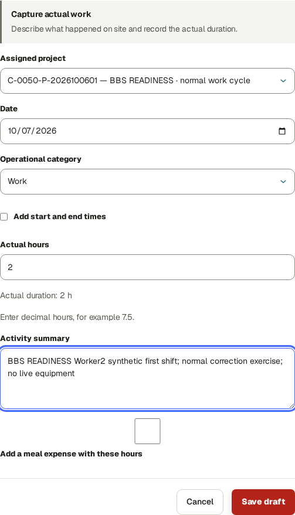
Recaptured native form with factual work inputs and the complete Save draft control. Fields are filled for illustration; this capture did not save another source.
J&A Automation · BBS role manual · 7 October 2026
Save and inspect actual time
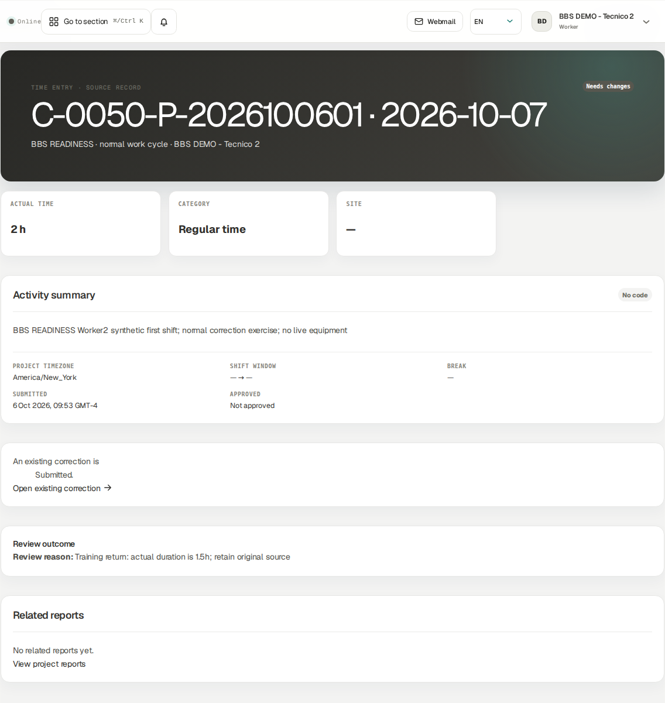
The same October 7 first-shift source after later review: Needs changes. The initial Submitted checkpoint precedes this current state.
J&A Automation · BBS role manual · 7 October 2026
Record one expense with private receipt evidence
Isolated readiness lab · same Worker 2 persona · synthetic October 12, 2026 purchase
Go here: Expenses → Record expense
The worked receipt is a synthetic USD 3 tools purchase by Worker 2 on October 12 in the unlocked readiness project. It explicitly says training only and no real purchase. Saving and submitting are operational steps; reimbursement and bank payment remain separate.
The native form accepts JPG, PNG, HEIC or PDF receipts up to 10 MB. Preserve the actual receipt amount, currency and payer. Record reimbursement information separately from the purchase facts.
Do the task
Choose Record expense. Attach Receipt image or PDF, select Project, Date and Category, and fill Amount, Currency, Who paid and Description. Vendor/payment method and local time/related hours are offered contextual fields.
Check the full Save draft control, then use it. Reopen the exact saved expense and inspect worker, date, payer, USD 3 amount and attached private receipt.
Use Submit on the expense detail. Verify Submitted and hand the record ID to the permitted operational reviewer. No reimbursement or bank payment is claimed by submission.
Verify the result
One own Worker 2 receipt-backed USD 3 tools expense is Submitted. The separate weekly exercise attaches receipts to each saved draft before selected-week submission.
If you get stuck
If receipt processing or permission prevents access, use the precise document status/message and ask support. Uploading/registered does not universally mean antivirus-clean. Do not duplicate a purchase while checking a failed submission.
J&A Automation · BBS role manual · 7 October 2026
Record one expense with private receipt evidence
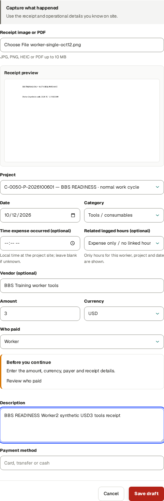
Native receipt-backed expense form with actual payer, amount, receipt control and the full Save draft action. Recaptured filled illustration; no duplicate was saved.
J&A Automation · BBS role manual · 7 October 2026
Record one expense with private receipt evidence
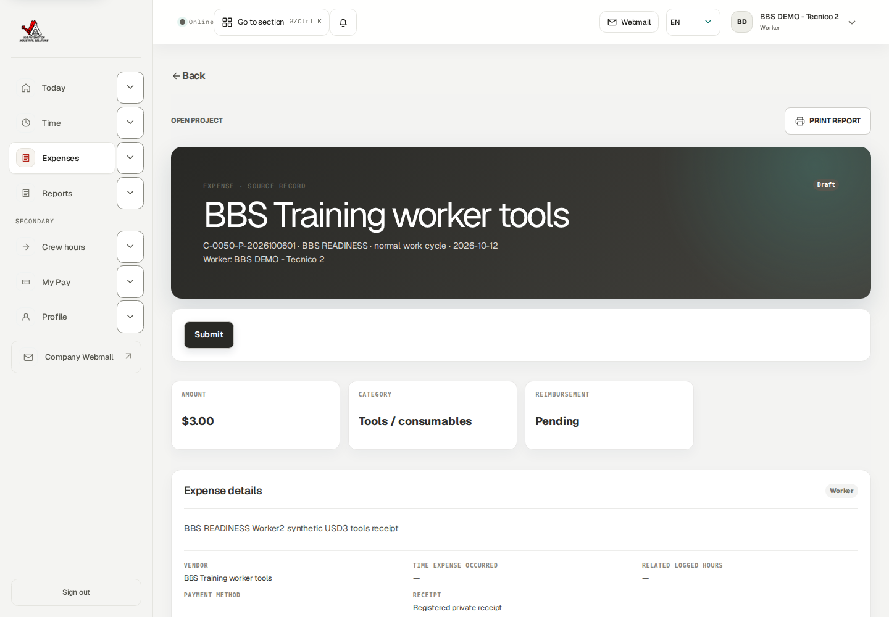
Saved own receipt-backed draft ready for inspection.
J&A Automation · BBS role manual · 7 October 2026
Record one expense with private receipt evidence
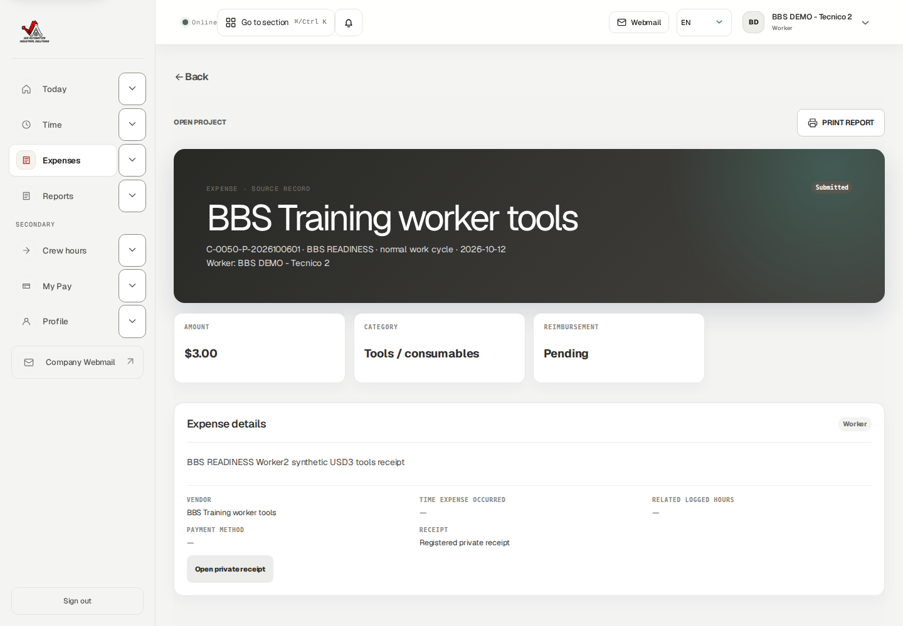
Actual Submitted state after native Submit.
J&A Automation · BBS role manual · 7 October 2026
Save and submit a daily field report
Isolated readiness lab · own Worker 2 report · synthetic October 12, 2026
Go here: Reports → New daily report
A daily report tells the operational story. It does not create actual hours, technical approval or customer acceptance. The Worker exercise describes a fictional bench inspection and has its own report ID.
The actual form begins with Project, Work date, Site / shift, Shift summary and Tasks completed. It also offers Problems found, Corrective actions, Downtime minutes, Standby reason, Open items, Next day plan and a safety flag. Report actual conditions, including genuine risks; this training bench had no live production change.
The readiness exercise saved an own Draft, generated its English source PDF, checked Ready with Refresh and downloaded the readable native file before Submit for review. The PDF panel’s Language selects English, Spanish or Portuguese independently of the navigation language.
Do the task
Choose New daily report. Complete Project, Work date and the factual summary/tasks; fill applicable problems/actions/downtime/next-step fields.
Use Save daily report. Open the Draft report and inspect its header and content. Saving/autosaving content does not submit it.
Use Submit for review and confirm Submitted. This October 12 readiness checkpoint ends at submission; inspect the exact report’s later review state separately.
Verify the result
Own Daily Draft → Ready source PDF → native download → Submitted was tested in the readiness project. A readable pre-submission PDF is a snapshot of that draft; it is not operational approval or customer acceptance.
If you get stuck
Correct an unsent draft using its available edit controls. For submitted/returned/approved reports, use the offered correction flow or hand the specific record to the reviewer; do not overwrite approved history.
J&A Automation · BBS role manual · 7 October 2026
Save and submit a daily field report
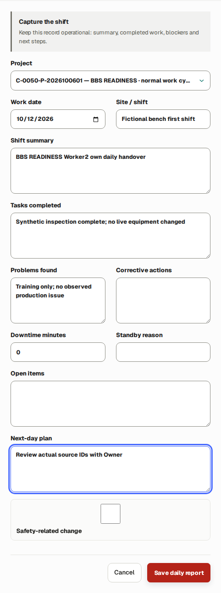
Own Worker 2 Daily form with its complete native save button.
J&A Automation · BBS role manual · 7 October 2026
Save and submit a daily field report
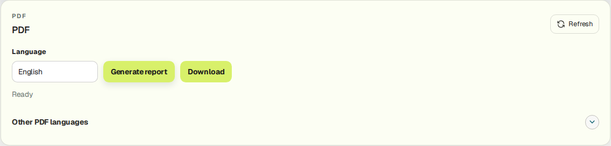
Own source PDF Ready while the report was still Draft.
J&A Automation · BBS role manual · 7 October 2026
Save and submit a daily field report
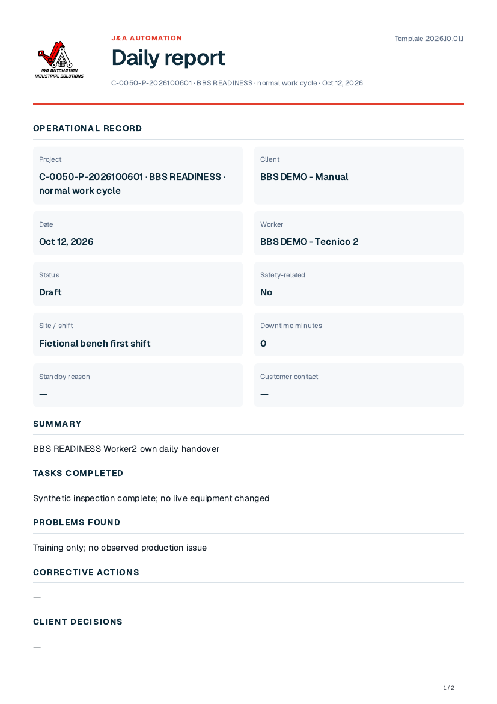
First page rendered from the actual own browser-downloaded Daily PDF.
J&A Automation · BBS role manual · 7 October 2026
Describe a technical change without treating it as permission
Isolated readiness lab · own Worker 2 report · synthetic October 12, 2026
Go here: Reports → New technical report
Technical reports identify a system and document Problem / symptom, Diagnosis / root cause, Change performed, validation, remaining risk and rollback. Submitting a report does not authorize a live PLC change or substitute for your employer’s safety/change-control procedure.
The exercised report is explicitly a fictional bench. Offered fields include System / machine, Plant / site, Area / line, Station / machine, System type, PLC platform, Controller, HMI / SCADA, Network / protocol, Software version and Program / project reference. The actual save label is Save PLC report.
The readiness exercise saved an own Draft, generated its English source PDF, checked Ready with Refresh and downloaded the readable native file before Submit for review. The PDF panel’s Language selects English, Spanish or Portuguese independently of the navigation language.
Do the task
Choose New technical report. Identify the equipment and write the problem, diagnosis and change in readable factual language.
Fill Production impact, Validation performed/result, Open risk / issue, Rollback plan and safety impact where applicable. Use Save PLC report.
Open the Draft and inspect the details; use Submit for review, then verify the reviewer’s resulting state.
Verify the result
Own Technical Draft → Ready source PDF → native download → Submitted was tested in the readiness project. A readable pre-submission PDF is a snapshot of that draft; it is not operational approval or customer acceptance.
If you get stuck
A missing validation or safety decision needs a real responsible-person handoff. Do not invent a successful validation to make the report look complete.
J&A Automation · BBS role manual · 7 October 2026
Describe a technical change without treating it as permission
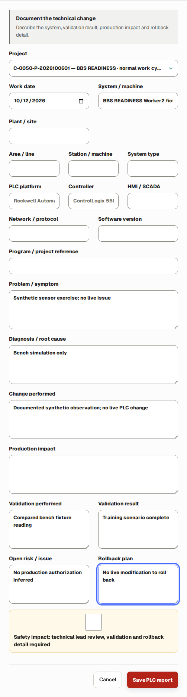
Own Worker 2 Technical form with its complete native save button.
J&A Automation · BBS role manual · 7 October 2026
Describe a technical change without treating it as permission
Own source PDF Ready while the report was still Draft.
J&A Automation · BBS role manual · 7 October 2026
Describe a technical change without treating it as permission
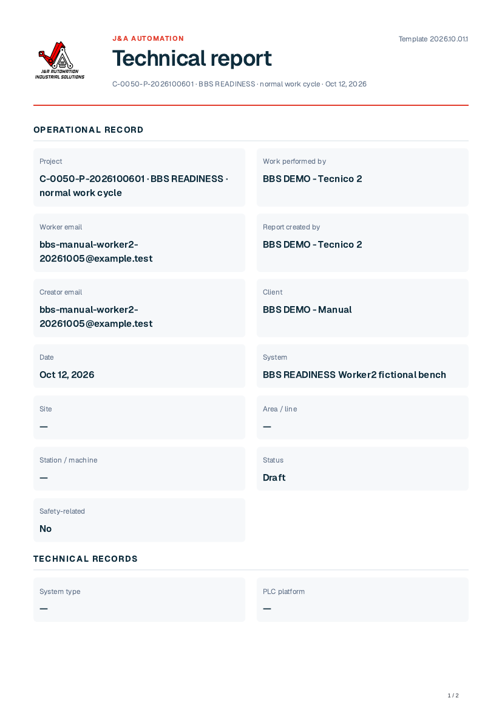
First page rendered from the actual own browser-downloaded Technical PDF.
J&A Automation · BBS role manual · 7 October 2026
Submit your own displayed week and verify every source
Isolated readiness lab · actual own Worker 2 weekly submission · October 5–11, 2026
Go here: Time → Log time; Week of → Open week → Submit all week drafts
For your own Worker account, enter each worked day through Log time and Save draft. The deployed Enter a week in a table time-entry form is an Owner control; it is not present in this Worker screen. Inspect existing sources before adding another day.
Use Week of → Open week to choose the displayed submission week. The own weekly action can include an eligible active linked correction as well as an ordinary draft. In this test, the October 7 corrected 1.5-hour draft and October 8 ordinary 0.5-hour draft were both submitted together.
Copy previous week layout is a separate reference control. It copies layout with zero hours, not an assertion that last week’s work happened again. Inspect the displayed Previous week and This week before Add this week’s layout; do not treat a zero-hour layout as completed actual work.
Do the task
Save accurate own daily work with Log time → Save draft, then open every intended source and verify its current state.
Select Week of → Open week. Read the displayed date range and draft count; review ordinary sources and any correction’s original link.
Choose Submit all week drafts. Refresh the page, open each source and verify Submitted plus the remaining draft count. A count alone is not evidence that a specific source was sent.
Verify the result
Actual own Worker 2 result: two eligible drafts before submission, both named source records Submitted afterwards, zero remaining drafts. The original two-hour returned source and withdrawn wrong correction were preserved.
If you get stuck
A blocked or changed draft must be reviewed through its exact record. Do not repeatedly resubmit the whole week to force a guarded source.
J&A Automation · BBS role manual · 7 October 2026
Submit your own displayed week and verify every source
Own selected week before the actual weekly action: two drafts, including an active linked correction.
J&A Automation · BBS role manual · 7 October 2026
Submit your own displayed week and verify every source
After the native weekly action: zero drafts; the record-state manifest independently confirms both ordinary and correction sources Submitted.
J&A Automation · BBS role manual · 7 October 2026
Use expense batch tools and corrections carefully
Isolated readiness lab · actual own weekly expenses, receipt attachment and returned expense correction
Go here: Expenses → Enter a week in a table → Save weekly expense drafts → Edit → Submit this week
The weekly table saves up to one purchase per worked day for one project and your own account. Choose the project and week first; changing either can clear unsaved rows after confirmation. Enter actual category, amount, currency, payer, vendor and description. The exact save button is Save weekly expense drafts.
The tested October 10 and 11 purchases were USD 5 and USD 7. Each saved draft was opened with Edit, its own matching receipt was attached with Save changes, and the displayed October 5–11 week was then submitted. Two drafts became Submitted and zero remained.
Missing receipt rules are state-specific. The deployed weekly table creates receipt-optional drafts; an earlier USD 5 + USD 7 set therefore submitted without receipts. Where a saved draft requires a receipt, the weekly UI disables Submit this week and the repository validates the whole set. That required-missing saved-draft branch was source-checked, but was not created through a supported native control in this lab. Attach the required evidence rather than assuming every receipt-free draft is blocked.
Do the task
Open Enter a week in a table. Set Project, Week containing, Currency and Who paid before entering rows; use Save weekly expense drafts.
Open each saved draft through Edit, use Attach receipt (optional), select the correct date/amount receipt and Save changes. Reopen the exact expense to verify Registered private receipt.
Choose the intended Week containing → Show week. Inspect every included draft and use Submit this week. Confirm each record’s Submitted state and the remaining count.
For a returned expense, read Review reason and use Create corrected draft when offered. Review all values and the receipt: leave the attachment empty to retain the original receipt, or attach its genuine replacement. Create the linked draft, inspect it, then Submit.
Verify the result
Actual October 10/11 receipt-backed submission: exactly two expense IDs, USD 5 + USD 7, each with its own registered receipt, both Submitted and zero remaining drafts.
J&A Automation · BBS role manual · 7 October 2026
Use expense batch tools and corrections carefully · continued
The USD 5 source was subsequently returned for clearer description. A linked corrected draft retained the same receipt, date, currency and purchase amount and was Submitted; the original remains Needs changes.
If you get stuck
A linked correction does not offer unrestricted editing after creation. Use Withdraw correction draft only while offered and unsubmitted; a reviewed, allocated, reimbursed or otherwise locked source can require the reviewer/Finance handoff. No purchase amount is multiplied by creating its linked correction.
J&A Automation · BBS role manual · 7 October 2026
Use expense batch tools and corrections carefully
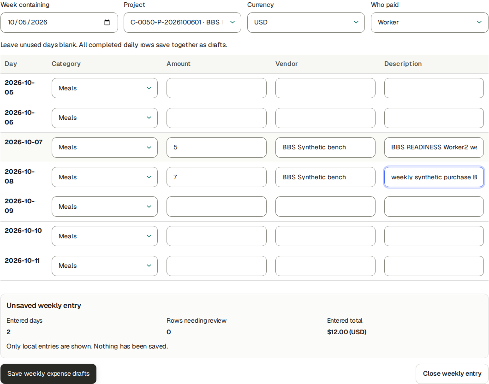
Native full weekly save form for the initial October7/8 receipt-optional drafts; the separate October10/11 receipt-backed exercise follows in the attachment and submission captures.
J&A Automation · BBS role manual · 7 October 2026
Use expense batch tools and corrections carefully
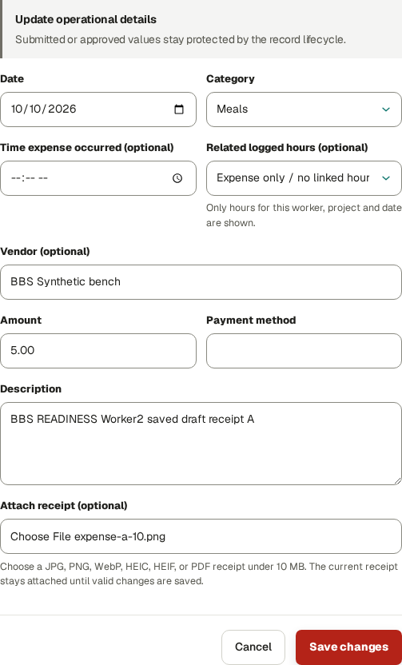
Edit the saved USD 5 draft and attach its matching October 10 synthetic receipt before Save changes.
J&A Automation · BBS role manual · 7 October 2026
Use expense batch tools and corrections carefully
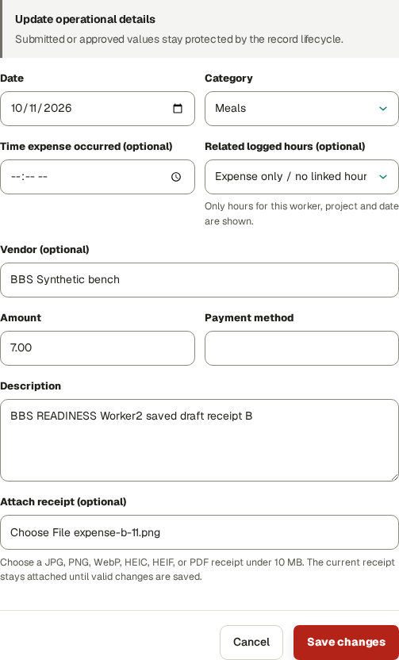
The separate saved USD 7 draft receives its own matching October 11 receipt.
J&A Automation · BBS role manual · 7 October 2026
Use expense batch tools and corrections carefully
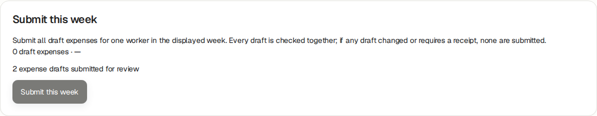
Actual selected-week result: zero remaining drafts.
J&A Automation · BBS role manual · 7 October 2026
Use expense batch tools and corrections carefully
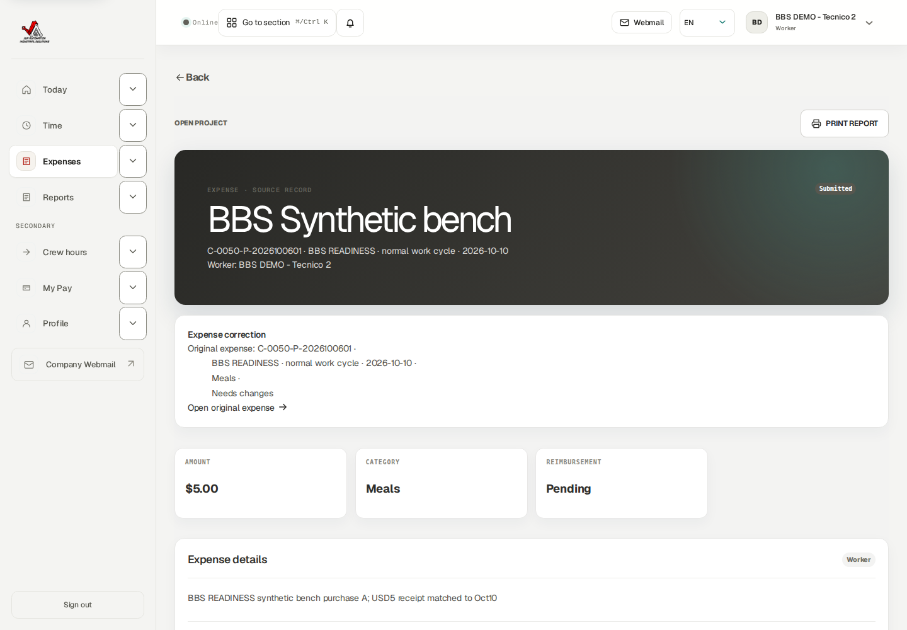
Returned USD 5 expense now has a linked Submitted correction with its original receipt retained.
J&A Automation · BBS role manual · 7 October 2026
Correct returned time and retain history
Isolated readiness lab · own Worker 2 normal correction · unlocked October 7, 2026
Go here: Time → returned source → Create corrected draft
The Owner returned Worker 2’s two-hour readiness-project source with a reason requesting 1.5 actual hours. Create corrected draft was available for this eligible source. It creates an audited linked replacement and preserves the original.
Review every value before creating the correction: a linked time correction has no Edit draft control after creation. If an unsubmitted correction is wrong, use Withdraw correction draft with a reason, return to the original and create the correct replacement. This exercise actually withdrew a wrong 1.75-hour draft and recreated a 1.5-hour draft.
Do the task
Open the Needs changes source and read Review reason. Use Create corrected draft.
Enter the correct Actual hours, date/category/activity and a concrete Correction reason; create the draft and inspect its original link.
For an incorrect unsubmitted linked draft, enter Why withdraw this draft? and use Withdraw correction draft. Confirm the original is available again, then create the accurate replacement.
Submit individually or through the eligible own displayed week. This exercise used weekly submission for the corrected 1.5-hour source alongside a separate ordinary draft.
Verify the result
The original remains Needs changes. The wrong correction is withdrawn in audit history (stored as rejected), and the current linked 90-minute correction is Submitted. Operational approval remains the reviewer’s next action.
The older October 15–16 statement with 195 approved minutes is a historical verified example; it is not the status or total of this new correction exercise.
If you get stuck
If a correction is already submitted, use its current state and the reviewer’s next offered control. For a locked source, send the Owner its ID, project, work date, requested correction and reason; do not create an unlinked duplicate.
J&A Automation · BBS role manual · 7 October 2026
Correct returned time and retain history
The same October 7 first-shift source after later review: Needs changes. The initial Submitted checkpoint precedes this current state.
J&A Automation · BBS role manual · 7 October 2026
Correct returned time and retain history
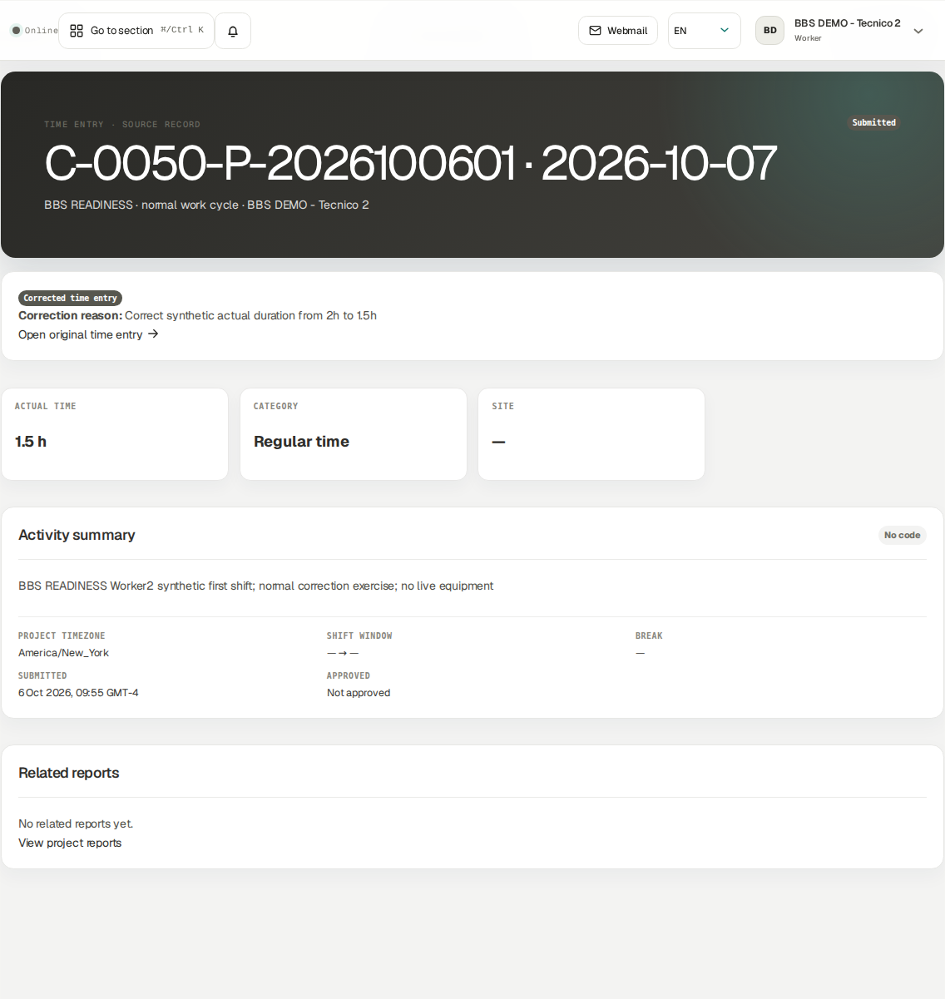
The accurate linked 1.5-hour replacement now shows Submitted after weekly submission. Its earlier Draft checkpoint and withdrawn 1.75-hour attempt remain historical.
J&A Automation · BBS role manual · 7 October 2026
Understand report PDFs, attachments and customer acceptance
Isolated readiness lab · native own PDF, attachment and returned Daily edit
Go here: Reports → your report detail
Use the own report PDF panel: choose Language, Generate report, then Refresh to check preparation. Download appears for the selected current Ready variant. Queued is not a finished file. A later source edit requires a fresh current PDF; the earlier downloaded snapshot remains earlier evidence.
An own Worker 2 Daily text attachment was actually uploaded as private supporting evidence while Draft. Allowed types include PDF, ZIP, common images and UTF-8 text, with the displayed 50 MB limit. Registered evidence and an available native download are separate from antivirus status; read the current status before relying on a file.
Report recovery differs from time and expenses. An ordinary Draft or Needs changes report can be edited through Modify report / Save changes and resubmitted as the same versioned source. This was actually tested for the returned Daily report. An eligible Approved report offers Create corrected draft; the resulting linked correction is not an unrestricted editable draft. For a locked report, send its ID, project, work date, requested correction and reason to the Owner or reviewer.
Customer period PDFs and customer acceptance are separate authorized workflows. Own source approval does not record a signature. The lab created no customer signature or acceptance.
Do the task
Before Submit for review, inspect saved report facts and authorized attachments. Generate and open the current own PDF when needed.
If returned, read the reviewer reason, edit only the offered fields, use Save changes and Submit for review; verify the same ID’s new version and state.
For an eligible Approved source, use the offered linked correction flow and review every value before creation. If the action is unavailable, send the source ID, project, work date, requested correction and reason to the Owner or reviewer.
Verify the result
Worker 2 returned Daily was edited and resubmitted as the same source. A fresh Spanish variant of the changed source reached Ready and was downloaded as version 5; the earlier English version 1 remains the pre-submission snapshot.
J&A Automation · BBS role manual · 7 October 2026
Understand report PDFs, attachments and customer acceptance · continued
If you get stuck
Do not promise Edit on a linked correction or a locked source. Do not fabricate signer evidence or claim a downloaded report was delivered to a customer.
J&A Automation · BBS role manual · 7 October 2026
Understand report PDFs, attachments and customer acceptance
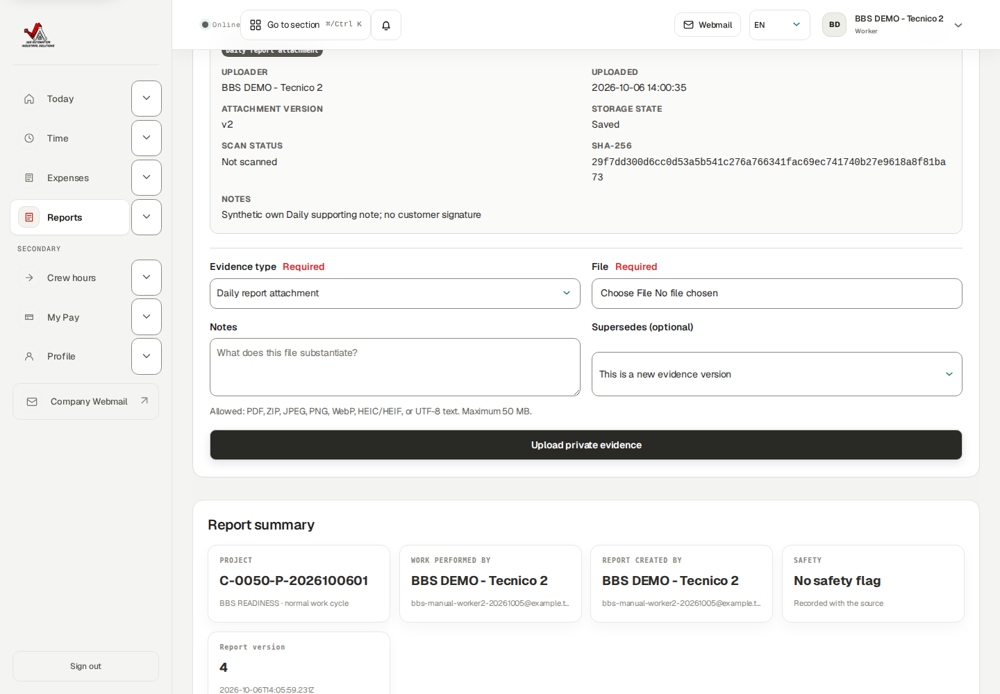
Native versioned edit of an ordinary Needs changes Daily report.
J&A Automation · BBS role manual · 7 October 2026
Understand report PDFs, attachments and customer acceptance
Spanish source variant Ready after the returned report was changed and resubmitted.
J&A Automation · BBS role manual · 7 October 2026
Understand report PDFs, attachments and customer acceptance
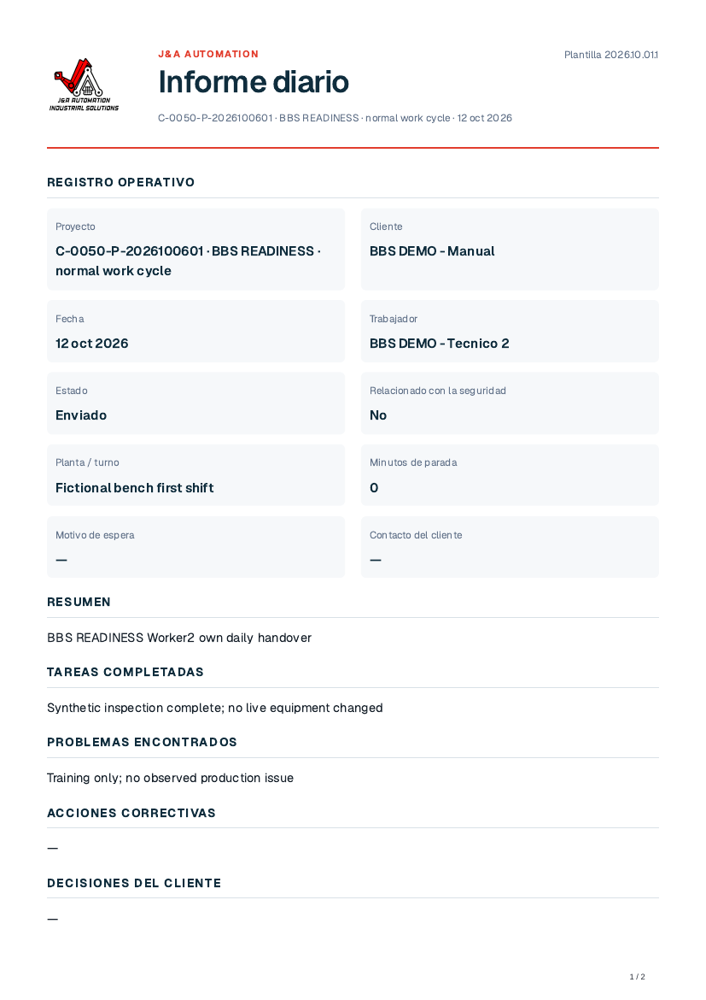
Readable native Spanish PDF of the current version 5 source.
J&A Automation · BBS role manual · 7 October 2026
Read your own compensation and reimbursement
Isolated BBS role lab · genuine Worker account · fictional October 2026 records
Go here: My Pay → From / Through → Apply period
My Pay displays your own activity and governed compensation estimates, reviewed settlements, expected dates, actual recorded payments and reimbursement information. Owner/Finance choose settlement periods and expected payment dates; there is no automatic worker payroll cadence demonstrated here.
Use your own statement to inspect the selected period and included activity. The October 15–16 training statement contains 195 approved minutes. Read the current estimate, reviewed settlement and recorded payment state separately; an estimate does not prove payment.
Exact activity is 2.5 h + 0.75 h = 3.25 h. My Pay summary rounds to one decimal (3.3 h and 0.8 h travel); rounding is not extra work. “No reviewed payments outstanding” can coexist with an estimate that has not yet become a reviewed settlement. A recorded payment is a business entry, not independent proof of a bank transfer.
Do the task
Select From and Through, then Apply period. Read approved and pending amounts separately by currency.
Open the compensation statement/activity detail and compare exact time records. Read reviewed settlement period, scheduled date, paid and remaining balances independently.
Check your reimbursement obligations separately from your compensation.
Verify the result
Confirm that My Pay identifies your own account. Selected source dates may differ from a settlement’s wider period.
If you get stuck
Ask Finance about missing rules, period coverage, reimbursement classification, payment references or discrepancies. A planned date alone does not prove payment.
J&A Automation · BBS role manual · 7 October 2026
Generate your own statement and check readiness
Isolated BBS role lab · genuine Worker account · fictional October 2026 records
Go here: My Pay → Worker statement
Generate report queues an own-worker PDF and CSV for the selected period. Queued, Ready and failed/preparation states must be checked before downloading.
The historical October 15–16 own Worker 2 request became Ready in both PDF and CSV. Its downloaded statement contains 195 approved minutes across two current linked sources. The selected From / Through dates determine the requested statement period.
Do the task
Set From October15 and Through October16 for the historical example, choose Apply period and confirm the dates, then Generate report. Use your real intended period during ordinary work.
If queued, use Check statement status after processing. Use the offered PDF/CSV downloads only when Ready.
Check your identity, period, activity and currency in the downloaded output.
Verify the result
PDF and CSV Ready were observed in the native UI. Both own downloads succeeded. The artifact contains 195 approved minutes, two linked current sources, the selected October 15–16 period and the Worker 2 identity. The statement is scoped to the own account.
If you get stuck
For a failed or indefinitely queued statement, ask the Owner/support to inspect the artifact job using the period and exact status. Do not repeatedly submit the same request or claim that Queued means a delivered file.
J&A Automation · BBS role manual · 7 October 2026
Generate your own statement and check readiness
Native own Worker statement panel: PDF and CSV are Ready for the selected October 15–16 period. Download each format from its Ready link.
J&A Automation · BBS role manual · 7 October 2026
Hand a locked time correction to the Owner
Isolated BBS role lab · genuine Worker account · fictional October 2026 records
Go here: Time → returned source → Create corrected draft
The historical October 6 returned source was locked when the worker attempted a four-hour to 3.5-hour correction. No replacement draft was created. A recently entered source can still be unavailable for correction.
Preserve the existing source and use the displayed next action or contact the Owner. Send the source ID, project, work date, requested correction and reason. The Owner coordinates the supported resolution and confirms whether a new correction is permitted. See Recovery · correct a source or request help (recovery-matrix).
Do the task
Read the current message and keep the existing returned source intact.
Send the Owner the source ID, project, work date, current/desired hours and correction reason. Wait for confirmation of the supported next action.
Verify the result
The blocked operation created no replacement draft and left the original source unchanged.
If you get stuck
Do not add an unlinked replacement or change the work date/person to work around the restriction.
J&A Automation · BBS role manual · 7 October 2026
Hand a locked time correction to the Owner
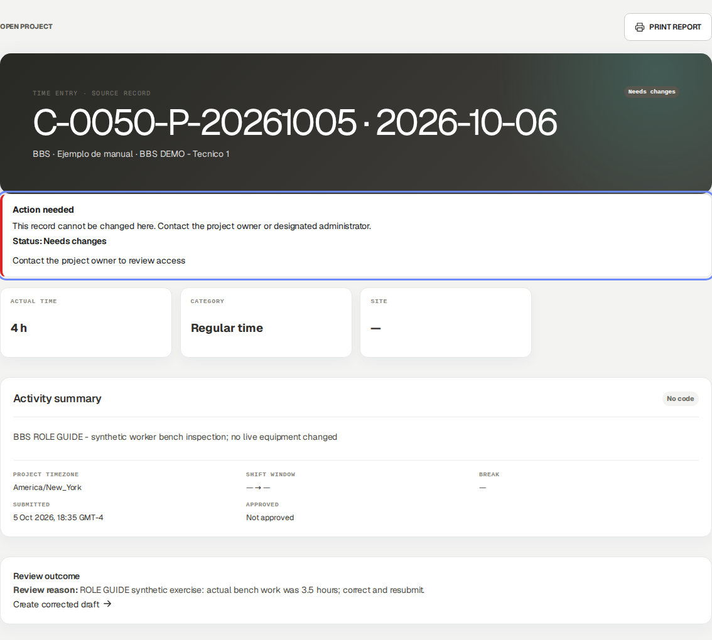
Actual refused correction result: the source cannot be changed here. Send its reference, work date, requested factual correction and reason to the designated administrator. No replacement was created.
J&A Automation · BBS role manual · 7 October 2026
Read a plan without creating actual hours
Isolated BBS role lab · genuine Worker account · fictional October 2026 records
Go here: Today → Upcoming assignments
Planning is a reference. The PM published a fictional October 16 assignment from 08:00 to 10:00 UTC with two planned hours. The Worker sees it under Upcoming assignments. Publishing this plan did not create a timesheet or complete any work.
Check the timezone displayed by the page and the work date on the source. The isolated runtime Today date is October 5 UTC; later dated role exercises are explicit training examples.
Do the task
Read project, start/end and Planned hours. Open project for the assigned project context.
After the work, use Time and record the actual duration and activity independently.
Verify the result
A two-hour plan can coexist with zero actual hours for that date. Actual time appears only after it is saved.
If you get stuck
Ask the PM/Owner to correct an incorrect or missing published plan. Record genuine authorized actual work rather than copying a plan into fictitious hours.
J&A Automation · BBS role manual · 7 October 2026
Read a plan without creating actual hours
Actual Worker 2 upcoming published two-hour plan; no October 16 actual time was created.
J&A Automation · BBS role manual · 7 October 2026
Follow a published assignment through actual work and review
Isolated BBS planning lab · synthetic October 20, 2026 work · genuine role sessions · no production hours
Go here: Today → Upcoming assignments → Time → Submit this week
Three controls have different purposes. A dated project assignment gives you project access. A published planning assignment describes intended work. The effective working schedule supplies the Expected hours in your weekly Time view. None records the work for you.
In this connected training exercise, the Owner published October 20, 08:00–16:00 UTC with eight planned hours for the fictional Chief and Technicians 1 and 2. Each person saw their own assignment card. Before anyone saved time, there were zero actual hours for that date.
Technician 1 then recorded six actual hours personally. The Chief recorded seven hours for Technician 2 through dated crew delegation and recorded eight Chief hours separately. These are synthetic future-dated training records in an isolated copy; do not copy them into the live portal.
Do the task
Open Today → Upcoming assignments. Read the project, date, UTC interval, site and Planned hours. Open project displays your permitted project context.
After genuine work, open Time → Log time. Select Assigned project and Date, enter Actual duration and Activity summary, then Save draft. In the illustrated exercise, Technician 1 saved six hours rather than copying the eight-hour plan.
Check the saved register and weekly row. Select the correct week with Week of → Open week. Use Submit or Submit all week drafts only after checking every draft in that displayed week.
An authorized Owner or Project Manager reviews the submitted internal-worker source in Approvals. Refresh your own Time view to see the resulting state; submitting or receiving a plan does not approve it.
If the Chief already recorded your hours, inspect the existing source before adding another. The seven-hour delegated source belongs to Technician 2 and is visible in that worker’s own Time view; it is not seven Chief hours.
Verify the result
The connected browser test ended with one approved source per person: Technician 1 six hours, Technician 2 seven hours, Chief eight hours. No time was created by publishing the plan.
Verify your own actual records and authorized project details. Read your own My Pay separately when needed.
J&A Automation · BBS role manual · 7 October 2026
Follow a published assignment through actual work and review · continued
If you get stuck
Ask the Owner/PM to correct an inaccurate published plan. You do not edit it from the assignment card.
Explain real progress and a shorter or longer shift in your Activity summary and Daily/Technical report. Record actual work rather than padding hours to match a target.
J&A Automation · BBS role manual · 7 October 2026
Follow a published assignment through actual work and review
Technician 1 sees the October 20 eight-hour plan under Upcoming assignments. Today is October 6 in this isolated snapshot; project membership exists although no plan is published for today.
J&A Automation · BBS role manual · 7 October 2026
Follow a published assignment through actual work and review
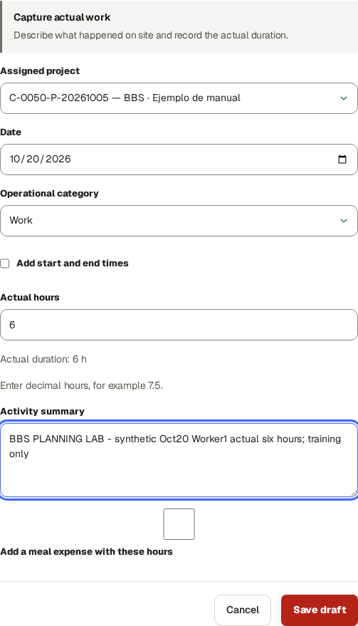
Recaptured native form with factual work inputs and the complete Save draft control. Fields are filled for illustration; this capture did not save another source.
J&A Automation · BBS role manual · 7 October 2026
Read Expected, Difference and Needs note correctly
Isolated BBS planning lab · synthetic October 20, 2026 work · genuine role sessions · no production hours
Go here: Time → Week of → Open week
The Owner configures the project’s effective working schedule in minutes for each weekday. In this training scope, the schedule is effective October 19 with 480 minutes on Monday–Friday and zero on Saturday/Sunday. Eight expected hours are a planning target; they do not create actual work records.
Expected is determined from dated project membership and its effective schedule, rather than by adding published plans. A three-hour published plan can therefore coexist with an eight-hour daily Expected figure. Where the application cannot determine an unambiguous target, it displays a dash instead of inventing one.
Difference means actual minus expected for that day. After operational approval, Technician 1 shows 6.00h Actual, 8.00h Expected and −2.00h Difference; Technician 2 shows 7.00h, 8.00h and −1.00h. Both weekly rows say Needs note because approved actual work differs from the target. The underlying time sources remain Approved.
Needs note is an explanatory comparison status. This exercise found no dedicated Add note or Clear Needs note control and it did not block the PM from approving accurate time. A report explaining the difference does not automatically remove this comparison label.
The final additional training checkpoint is later than the earlier weekly screenshots. The Owner gave Technician 1 another project membership covering October 23 only. Two own project assignments now cover that Friday, so Expected and Difference are —. This means an unambiguous target is unavailable; it does not mean a zero-hour schedule, missing actual source or missing saved BBS plan. The earlier tables correctly show Friday eight expected hours and a forty-hour week before this extra membership.
Do the task
Open Time, select the week containing the work date, and click Open week.
Read the daily row, not just the weekly total. A partly completed week can show a large negative weekly Difference because future or unworked scheduled days have zero actual hours.
Check the source record’s own approval state separately from the weekly comparison status.
On a phone, use the daily card with its labelled Actual, Expected, Difference and Status fields. Open day entries opens the matching actual sources.
J&A Automation · BBS role manual · 7 October 2026
Read Expected, Difference and Needs note correctly · continued
Verify the result
Technician 1: 6 − 8 = −2 hours. Technician 2: 7 − 8 = −1 hour. Chief: 8 − 8 = zero hours, with an Approved weekly status.
Approval records operational truth; it does not redefine the working schedule.
In the later browser test, Friday October 23 showed Actual 0.00h, Expected — and Difference —; October 20 remained six actual versus eight expected hours, −2.00h and Needs note. No second-project actual hours were created. The current project selector still showed only the permitted BBS project.
If you get stuck
If Expected is a dash, ask the Owner to check dated project membership and effective schedule coverage. Before the October 1 membership in this example, September 28–30 have no Expected figure.
If multiple project assignments make the target ambiguous, ask the Owner to investigate the allocation. Do not pick a target by adding plans or duplicating time.
J&A Automation · BBS role manual · 7 October 2026
Read Expected, Difference and Needs note correctly
Technician 1’s own weekly comparison after PM approval: October 20 Actual 6.00h, Expected 8.00h, Difference −2.00h and Needs note. The source itself remains Approved.
J&A Automation · BBS role manual · 7 October 2026
Read Expected, Difference and Needs note correctly
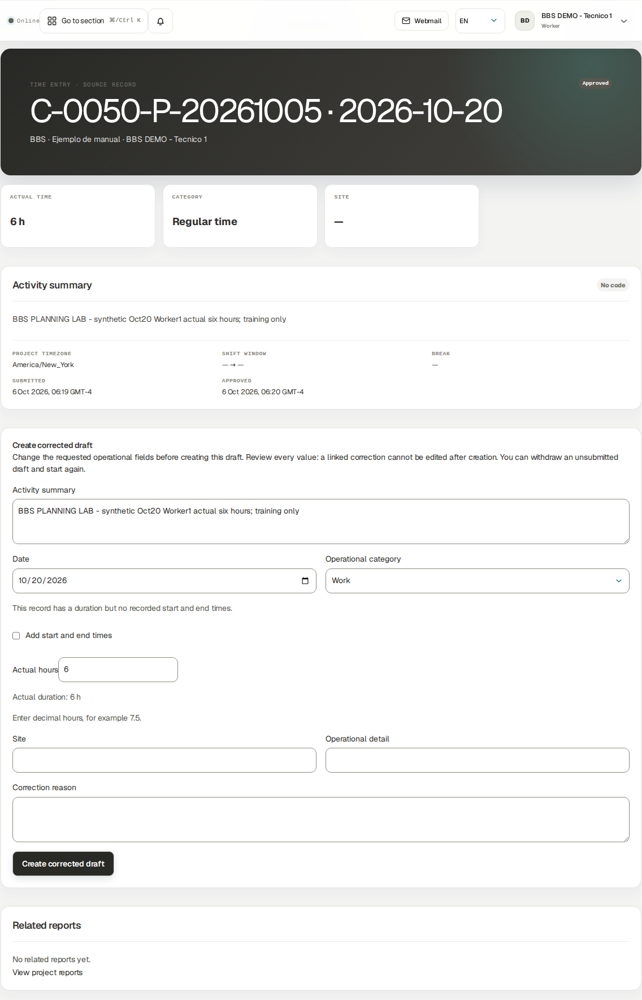
Current own October 20 source: Approved, six actual hours and the recorded work summary.
J&A Automation · BBS role manual · 7 October 2026
Read Expected, Difference and Needs note correctly
Technician 2’s own view after the Chief’s seven-hour source was submitted and PM approved: Expected remains eight hours and Difference is −1.00h.
J&A Automation · BBS role manual · 7 October 2026
Read Expected, Difference and Needs note correctly
Worker-view comparison after an October 21 plan was updated to three planned hours: the dated working schedule still supplies eight Expected hours. Planned hours do not overwrite Expected. This is the earlier checkpoint, before the additional October 23 one-day membership; its Friday eight-hour expectation and weekly forty-hour target remain correct for that saved stage.
J&A Automation · BBS role manual · 7 October 2026
Read Expected, Difference and Needs note correctly
Worker-view troubleshooting: September 28–30 are before the October 1 project membership, so Expected and Difference are dashes. This screenshot contains operational hours only.
J&A Automation · BBS role manual · 7 October 2026
Read Expected, Difference and Needs note correctly
Actual phone view of the October 20 comparison. Labelled fields retain six actual hours, eight expected hours, −2 hours and Needs note.
J&A Automation · BBS role manual · 7 October 2026
Read Expected, Difference and Needs note correctly
Later isolated checkpoint, after an additional one-day project membership on October 23: Friday Actual is zero and Expected / Difference are unknown (—). October 20 remains six actual versus eight expected hours. Earlier weekly tables precede this added membership and correctly show Friday eight expected hours.
J&A Automation · BBS role manual · 7 October 2026
Handle a missing plan and understand what a work goal means
Isolated BBS planning lab · synthetic October 20, 2026 work · genuine role sessions · no production hours
Go here: Today → Your assigned projects; Time; Reports
A project assignment and a published plan are separate. The Today screen can say No published assignment for today while Your assigned projects contains the project. The page explicitly allows actual work to be recorded for authorized projects; absence of a planning card is not evidence that project access was removed.
There is no worker task-goal lifecycle with Accept, Reject or Mark completed buttons on these cards. The work target is planning context. Record progress and outcomes in Activity summary and Daily/Technical reports, then submit through the normal review workflow. Project milestones are separate project checkpoints.
Crew delegation adds dated permission for a Chief to record selected colleagues’ actual work. It does not publish plans, create a team-wide agenda or grant operational approval authority.
Do the task
If no plan is shown, inspect Your assigned projects and confirm the work date. Ask the Owner/PM whether they intended to publish a plan for that date.
If a permitted project is missing from Log time, ask the Owner to check account status, assignment dates and project availability before entering work elsewhere.
If the card’s dates, site or hours are incorrect, ask the plan manager to Save assignment changes. Continue to record accurate actual work within valid authorization.
Use your Daily report for completed tasks, remaining work, issues and handover; use a Technical report for specific technical findings or changes.
Verify the result
No assignment-card acceptance or completion click is required or available. Saving/submitting actual records and reports provides the operational handoff.
Desktop, tablet and phone native screens were checked. The phone work card and weekly daily card retain their labels without horizontal page overflow.
If you get stuck
An expired project assignment or crew delegation is different from a missing plan. Ask the Owner to review the appropriate dated access record; a plan alone does not grant permission.
J&A Automation · BBS role manual · 7 October 2026
Handle a missing plan and understand what a work goal means · continued
Escalate with the project, work date and record state. Include only the operational information needed to explain the issue.
J&A Automation · BBS role manual · 7 October 2026
Handle a missing plan and understand what a work goal means
Actual Today screen before plan publication: assigned project count is one, no plan is published for today, and actual work may still be recorded for assigned projects.
J&A Automation · BBS role manual · 7 October 2026
Handle a missing plan and understand what a work goal means
Native phone assignment card: operational project, UTC interval, site and Planned hours only. The card offers Open project, with no Accept/Reject/Mark completed workflow.
J&A Automation · BBS role manual · 7 October 2026
Use phone and tablet views
Isolated BBS role lab · genuine Worker account · fictional October 2026 records
Go here: Time; Expenses; Reports; More
Use a narrow screen’s navigation rather than searching for the full desktop sidebar. The form may occupy a sheet; close it to return to the register. Wide tables can have an intentional internal horizontal scroll hint; the page itself should fit the viewport.
Do the task
Open Time on your phone and filter the intended project/date. Use More for My Pay, Profile, Notifications or Help.
Enter a short draft only when the environment and person are confirmed. Inspect the saved result before leaving the form.
Verify the result
Worker Time was checked at 1440, 768 and 390 pixels: no page-level horizontal overflow.
If you get stuck
If a control or row is clipped, report the page, screen width, exact action and screenshot without credentials. Do not compensate by saving the same record twice.
J&A Automation · BBS role manual · 7 October 2026
Use phone and tablet views
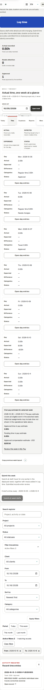
Current own Time workspace at 390 pixels; record factual duration and activity, then follow its review state.
J&A Automation · BBS role manual · 7 October 2026
Use phone and tablet views
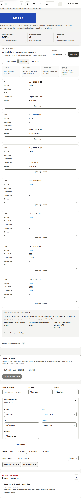
Current own Time workspace at 768 pixels; record factual duration and activity, then follow its review state.
J&A Automation · BBS role manual · 7 October 2026
Maintain expertise, availability and account security
Reference procedure · current controls/source checked; mutations not exercised in this role lab
Go here: Profile → Expertise and availability; Account security
Your workforce profile is separate from account role and project assignment. The Worker 2 profile was inspected natively; security and availability mutations were not performed in this role exercise.
Add expertise offers the expertise choice and proficiency. Add availability opens a dated UTC availability window; availability is a planning signal, not published assignment or actual work. Passkeys use Device name and Register passkey. Authenticator setup can return a setup URI and one-time recovery codes; keep them private.
Do the task
Inspect your expertise and availability calendar. Use the offered own-profile add/edit controls for genuine skill or availability information.
For an authorized security change use your own account’s passkey/MFA controls, follow device/authenticator prompts and verify completion before signing out.
Store recovery material in an approved password manager. Never paste credentials or recovery codes into a report or support screenshot.
Verify the result
Expertise/availability changes do not grant review authority or create hours. No MFA/passkey success is claimed from this read-only inspection.
If you get stuck
Ask the Owner/support about unavailable expertise, incorrect timezone, access recovery or a lost device. Do not use another person’s account as a recovery shortcut.
J&A Automation · BBS role manual · 7 October 2026
Maintain expertise, availability and account security
Native Worker 2 own profile read-only inspection; no security secrets were generated.
J&A Automation · BBS role manual · 7 October 2026
Use notifications and escalate the right record
Reference procedure · current controls/source checked; mutations not exercised in this role lab
Go here: Notifications; Help
Opening a notification or marking it read does not approve the underlying source or complete its next action. Follow the record and verify its current state.
Help provides role guides and Contact support. The verified support address is admin@j-aautomation.com. A live portal/webmail link is a live company service, not a training switch. No support email was sent in this exercise.
Do the task
Open the notification and follow its record link. Check current state; old notifications can refer to a state that has since changed.
For help include role, environment identity, project/record ID, date, intended action and exact error; include a safe screenshot if useful.
Send operational corrections to the PM/reviewer, your own reimbursement or My Pay questions to the designated contact, and access/assignment or locked-source issues to the Owner.
Verify the result
Requests outside the Worker’s authorized workspace were denied; the own receipt was available. An archived document returned 404, which alone does not prove the active-document access rule.
If you get stuck
Never include session cookies, passwords or recovery codes. Permission denial is a handoff signal, not a reason to switch credentials.
J&A Automation · BBS role manual · 7 October 2026
Finish a workday and verify the handoff
Isolated BBS role lab · genuine Worker account · fictional October 2026 records
Go here: Today → Time → Expenses → Reports → My Pay
Use this task checklist on your own project. A saved draft is not a completed workday, and a submitted source still needs the appropriate review.
The October 6 readiness audit adds explicit native-browser outcomes and state-specific limits. Per-ID status and source IDs are recorded under docs/evidence/bbs-readiness-20261006/worker-chief. Earlier planning/role-lab screenshots retain their original historical scope; they are not the state of the new readiness sources.
Do the task
Confirm account/environment/project/date; inspect plans without treating them as actual work.
Record actual hours once; inspect and submit the intended drafts.
Record each purchase once, preserve payer/currency and attach its real authorized receipt.
Save and submit the required Daily and Technical reports with genuine factual evidence.
Read returned reasons and create linked corrections where offered. For a locked source, send the Owner its ID, project, work date, requested correction and reason.
Check approved/pending sources and your own My Pay; send reimbursement and settlement questions to the designated contact.
Verify the result
Lab passes: native time/expense/report saving and submission, successful linked correction and independent review, a locked-source correction refused without a replacement, own receipt access, denied unrelated access and responsive views.
Readiness native results: own ordinary and current linked time correction Submitted together, count 2→0; receipt-backed weekly expenses and returned expense recovery, own Daily/Technical Ready PDF downloads before submission, and own statement PDF/CSV downloads. See the readiness per-ID audit for exact current states.
J&A Automation · BBS role manual · 7 October 2026
Finish a workday and verify the handoff · continued
If you get stuck
Reference-only: account onboarding/security recovery, layout copying, customer acceptance, own expertise/availability/security changes, and real bank/email delivery. A required missing receipt weekly guard was source checked; the native weekly form creates receipt-optional drafts, so this lab does not claim a missing-required-receipt runtime test.
J&A Automation · BBS role manual · 7 October 2026
Recovery · correct a source or request help
Use your role’s worked correction lesson and the controls offered on the current record. Preserve the original. A new purchase is different from correcting an existing purchase.
State
Supported next action
Ordinary Draft
Use Edit/Save draft where present; attach the actual receipt/evidence before Submit. Inspect each saved draft after weekly table entry.
Submitted
Read current state and reviewer handoff. Do not create another source merely because review is pending.
Needs changes
Read the reason. Time uses Create corrected draft where available, then submit/review the linked replacement. A returned Daily/Technical report instead offers Edit and Save changes on the same report, then Submit for review; follow the exact role lesson.
Rejected
Inspect the reason and contact reviewer/Owner. The time detail does not offer the same linked-correction route as Needs changes; do not assume that route exists.
Approved, correction available
Use the offered linked correction and review every value before creating it. Submit the replacement for the authorized reviewer and verify its resulting state.
Locked or correction unavailable
Send the source ID, project, work date, visible state, requested correction and reason to the designated administrator. Do not create a duplicate. Wait for instructions before changing the record.
If you get stuck
If an action is unavailable to your account, return to your workspace and contact the designated administrator with the record reference and requested action. Do not change dates or people to work around a restriction.
J&A Automation · BBS role manual · 7 October 2026
Security · verify your own device and recovery options
Go here: Profile → Account security; Profile → Add availability
Do the task
Check Account security identifies YOUR account even when an authorized workforce profile inspection shows another worker above it. Enroll only your own device. MFA is optional in this release.
For a passkey, enter Device name and choose Register passkey on the approved secure portal. Complete your device’s creation confirmation. Verify Passkey registered for this account, the registered count and named device row. Cancelled/failed registration is not enrollment.
To retire your own lost/obsolete passkey, first confirm you retain another working sign-in method. Select Revoke on the exact device and verify Passkey revoked and removal of its row. If you cannot sign in, use the verified support route rather than another person’s session.
For an authenticator, choose Enable MFA. Keep the setup URI and one-time recovery codes private in the approved password manager. Add the URI to your authenticator, enter its current six-digit Authenticator code and choose Verify MFA. Verify Enabled and Disable MFA appear; enabling without verification is not completed enrollment.
At a later MFA sign-in use Six-digit code → Verify and continue. If the authenticator is unavailable, choose Use a recovery code and enter one unused stored code. If neither method is available, contact admin@j-aautomation.com for identity-verified recovery. Do not send recovery codes or the setup URI to support.
To remove optional MFA while signed in, choose Disable MFA and verify Not enabled/Enable MFA. Confirm the intended own account before doing so. A successful settings change is separate from recovering a lost account.
Where Add availability is offered, fill Starts, Ends, Availability and Note using the displayed time basis, then Save availability. Verify the saved interval/status/note in the list; use Edit availability on that row and save the changed values. Availability is not project membership, a published shift or actual hours.
J&A Automation · BBS role manual · 7 October 2026
Security · verify your own device and recovery options
Isolated recipient’s authenticator setup was verified; the native Enabled state is shown after secret URI/recovery codes disappeared. No usable security material is published.
J&A Automation · BBS role manual · 7 October 2026
Completion check · your permitted role cycle
Use the worked lessons for your own role. Historical examples retain their stated dates and states. A procedure labelled reference was checked against the controls; its outcome was not necessarily executed in the illustrated session.
Verify the result
Confirm your identity, project and dates. Verify the saved and submitted source, its review state, supported correction or administrator handoff and each permitted Ready output. Submission, review and download are separate checkpoints.